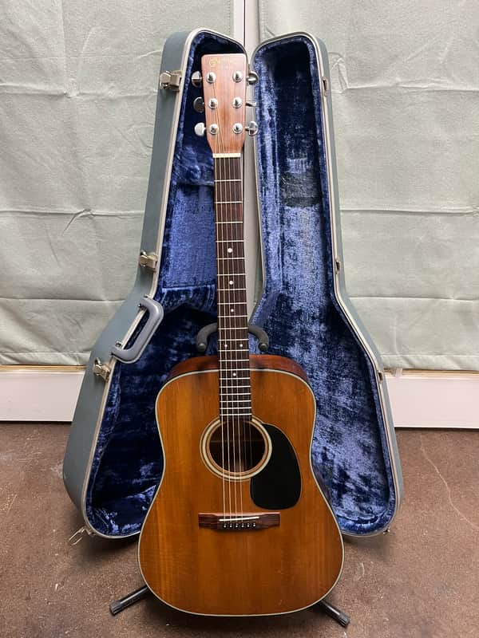
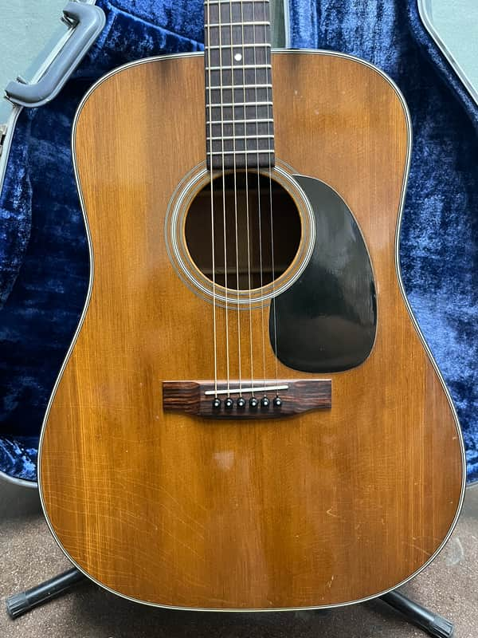
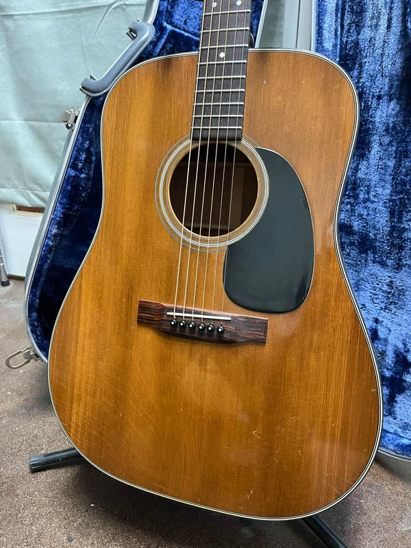
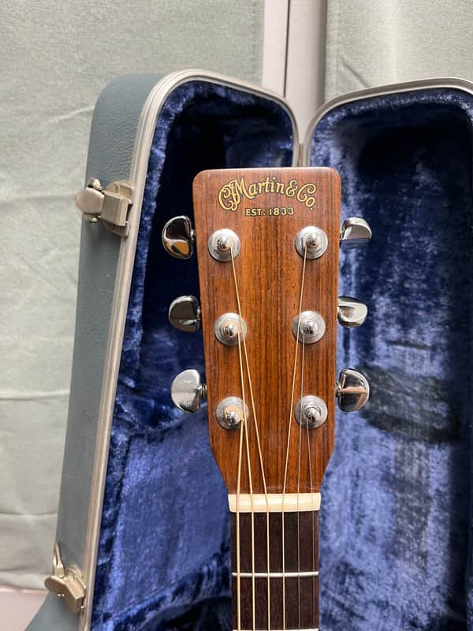
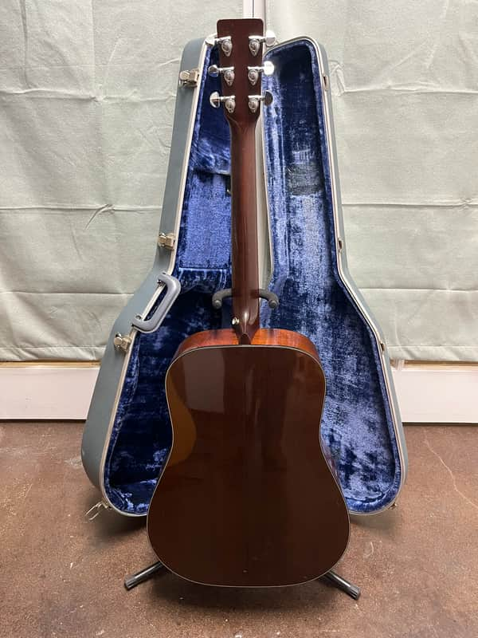
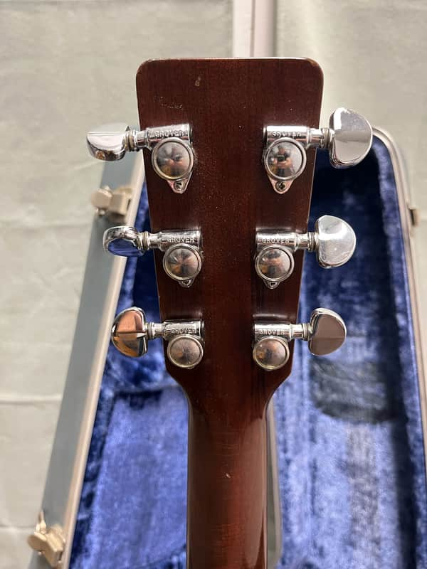
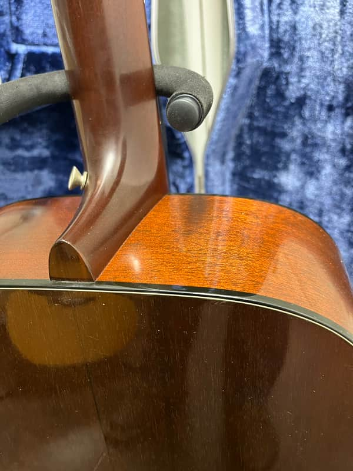
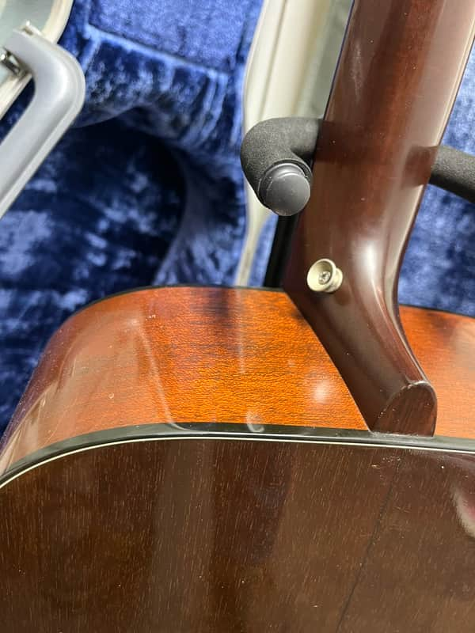
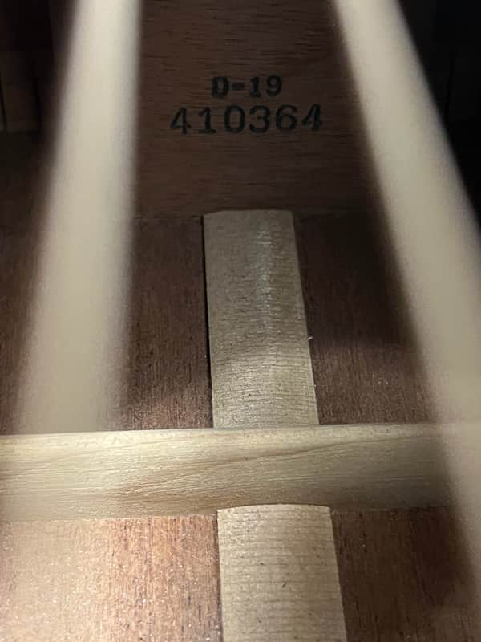
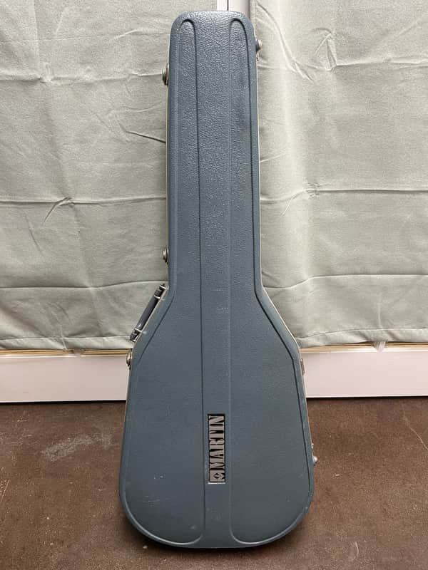

Produced during a few short years in the late 70's and early 80's the D-19 is essentially a D-18 with a stained top. This is a nice example from 79 and has beautiful grain in the bridge, a neck reset, refret, and Waverly bridge pins. Has great clarity and a soft neck profile. Comes with the original case.









